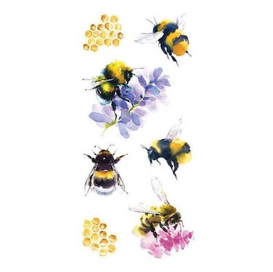

Les abeilles ne sont pas les seuls agents pollinisateurs
Seulement 10 % environ des végétaux s’en remettent au vent pour assurer leur pollinisation. C’est le cas notamment des conifères (quelques centaines d’espèces dans le monde). La plante n’a aucun effort à faire pour séduire puisqu’elle n’a pas besoin d’attirer les pollinisateurs avec des fleurs colorées, du nectar ou bien des parfums. En revanche, elle dépense beaucoup d’énergie à produire du pollen que dispersera le vent.